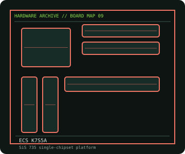

[ INDIVIDUAL COMPONENT // MOTHERBOARDS ]
ECS K7S5A
Early Socket A board with SiS 735, mixed SDR/DDR DIMM sockets, AGP 4x and model/revision-dependent BIOS support. This entry identifies one product model; revision and firmware qualifications are stated below.

IDENTIFICATION: Check the PCB silkscreen, printed revision, assembly code, and firmware identifier on the actual board. Similar model names and PCB revisions may use different specifications or firmware.
Specifications
| Catalog subcategory | AMD Socket platforms |
|---|---|
| Exact board / model | ECS K7S5A |
| Era / platform | Socket A SiS 735 desktop board, 2001 |
| CPU and socket | Socket A AMD Athlon XP/Athlon/Duron families supported by the board's revision and BIOS; do not infer support for every later Athlon XP stepping |
| Chipset / controller | SiS 735 single-chipset platform |
| Memory | Two 184-pin DDR DIMM sockets and two 168-pin SDR DIMM sockets; DDR and SDR memory types cannot be used simultaneously. Capacity and speed limits depend on module type and board revision. |
| Expansion and connectivity | ATX; AGP 4x, five 32-bit PCI and AMR; two IDE channels up to ATA/100, floppy connector, USB 1.1, AC'97 audio and 10/100 Ethernet on equipped variants |
| Firmware | Award BIOS; K7S5A and K7S5A Pro/revision BIOS images are not interchangeable. Verify the PCB revision and recovery method before flashing. |
Compatibility and revision notes
There are materially different K7S5A revisions and a K7S5A Pro. Identify the exact model from PCB silkscreen; use the manual's CPU list and memory limitations. The AGP slot is not PCIe.
Physical socket fit alone does not establish compatibility. Verify the exact processor support list, minimum BIOS, memory population rules, case dimensions, power connectors and shared-lane behavior in the cited model documentation before installation.
Preservation and repair
Check for swollen/leaking capacitors around the CPU VRM and memory, cracked AGP/PCI joints and corrosion near the battery. Inspect socket A CPU pins and cooler retention tabs. Preserve the installed BIOS and note whether SDR or DDR memory was originally fitted before diagnosing boot failure.
For an archive record, photograph the PCB and labels before cleaning; note serial/date codes, BIOS/BMC versions, accessories, known faults, repairs, and test conditions. Use ESD-safe handling and never apply power with loose conductive hardware beneath the board.
Sources & further reading
- ECS — K7S5A product specificationsECS model page for chipset, memory, expansion and I/O identification.
- ECS — K7S5A user manualECS documentation/support page; confirm printed board revision before using files.
Manufacturer model documentation is the primary reference; confirm the document revision and board markings when specifications vary by revision or SKU.